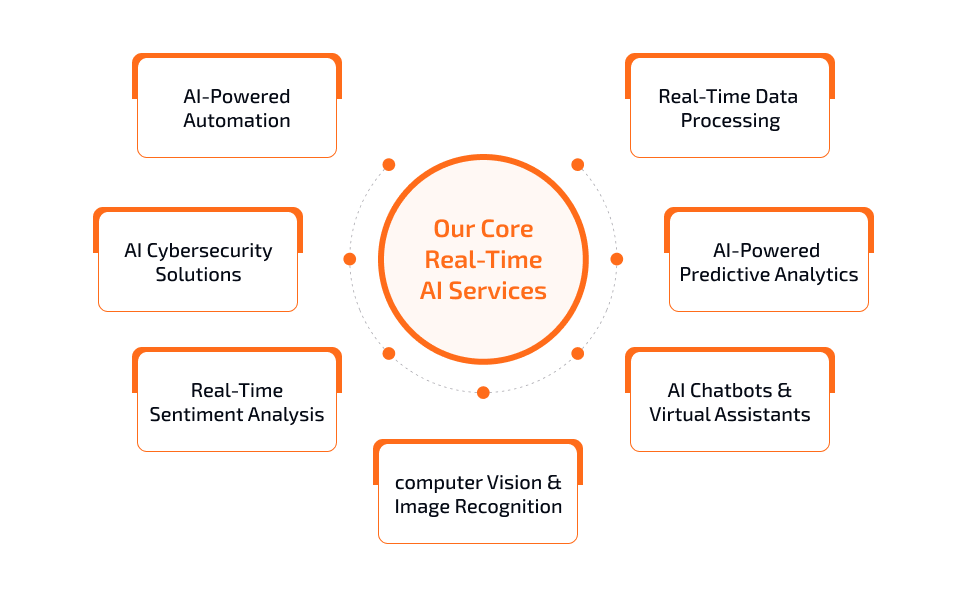

Are you looking to integrate AI-driven solutions into your business to automate tasks and streamline operations but find that proprietary AI models come with high licensing fees, limited customization, and vendor lock-in? Then it's time to look at open-source AI models. They are a great option if cost-effectiveness, flexibility, and transparency are what you want in your AI solutions. As you may be aware, open-source AI models are free, and you can customize, fine-tune, and deploy them into your existing system. The great part is that they are free of licensing costs.
You may have budget constraints while still wanting to enhance operations, and we help you integrate open-source AI models into your business effortlessly. If that sounds great, then there’s even more— the entire process doesn’t involve any hidden costs or vendor lock-in. With a team of experts, we also offer customizable open-source AI integration into your existing business operations. Choose us as your open-source AI model development company and empower your business with innovation, automation, and operational efficiency.
Open Source AI Models Development - A True Game-Changer for Businesses
Undeniably, building AI from scratch is not just time-consuming but also expensive. However, this can be overcome with open-source AI models, a true game-changer for businesses aiming to thrive in the digital landscape. Unlike closed systems, open-source models offer flexibility, customization, and transparency as required by your business.
If you are ever thinking of transforming your business while keeping costs low, we provide open-source AI development solutions that deliver real impact. With our services, you can access cutting-edge technologies like NLP, predictive analytics, generative AI, and computer vision.
Whether you want to automate processes, enhance decision-making, or build cutting-edge machine learning models, we provide end-to-end open-source AI solutions integrated with your existing workflow.
How Does an Open Source AI Models Development Company Build Powerful & Flexible AI Solutions
Do you ever want to build powerful AI models without software limitations? It is possible and that’s where we come in to rescue you as a leading open-source AI models development company. With our expertise, we develop, train, and deploy open-source AI models according to your business requirements.
Our well-trained AI experts work with the motto of creating open-source AI solutions that are efficient, flexible, transparent, and scalable while aligning with industry best practices. It is a cost-efficient intelligence-building option, as you don’t have to deal with licensing fees while using AI frameworks available for free.
Our team of AI engineers and data scientists leverages popular frameworks like PyTorch, TensorFlow, and Hugging Face to design highly intelligent AI models. Thus, you can enhance your business productivity, automate repetitive tasks, make data-driven decisions, and more. Collaborating with us means embedding an AI model that works for your needs.
Why Your Businesses Need an AI Model Development Company
AI is an advancement in technological innovation that helps businesses grow. It not only solves real-world problems but also allows businesses to make smarter decisions, automate tasks, and enhance user experiences. As an AI model development company, we aim to work closely with you to develop AI solutions that align with your business needs. With our comprehensive and strategic approach, we help your business provide solutions for real-world problems while driving innovation.
With our AI model development company, you will get access to services like:

1. We design intelligent solutions from scratch and customize them to meet your business challenges.
2. By fine-tuning existing open-source AI models, we help businesses save time and resources while delivering high-standard AI solutions.
3. We optimize AI models to ensure they deliver results faster, with efficiency and accuracy.
4. We support deployment on cloud platforms, on-premise infrastructure, and edge devices to ensure AI solutions integrate seamlessly with your business workflow.
AI Model Development Services - From Data to Decision-Making
AI is all about data, strategy, and continuous improvements. Thus, our AI model development services cover the entire AI lifecycle and deliver effective, accurate, and transparent AI solutions. With our hands-on and collaborative approach, the AI solutions you get will make a difference in your business growth.
Here is a glimpse of what our AI model development services is all about:

1. We collect, clean, and refine data into high-quality information. With this, AI models will deliver clean and accurate results, thus minimizing errors.
2. Based on the business model, we choose the best AI algorithms and train the data to optimize it for your business needs.
3. We ensure to deliver the AI solutions that provide fair and unbiased outcomes.
4. Since AI utilizes sensitive information, we ensure our intelligence solutions comply with industry standards and regulations.
Why Businesses Should Leverage Open Source Machine Learning Models
Machine Learning (ML) is the brain of AI, as it is the algorithm system that utilizes data analysis, pattern recognition, and predictions to make decisions. Unlike traditional ML, open-source ML models are cost-efficient as they do not need to be built from scratch. Besides, you can find these solutions flexible, transparent, and capable of driving your business toward long-term success.
We develop, customize, and fine-tune open-source machine learning models, allowing businesses to leverage the full potential of AI. Our experts deliver tailored AI solutions for automation, predictive analysis, and data-driven decision-making that seamlessly integrate with your existing systems.
1. Supervised Learning Models that learn from labeled data. It helps businesses make data-driven decisions and improve customer experience. We work with:
- Regression Models
- Classification Models
- Forecasting Models
2. Unsupervised Learning Models that analyze data without predefined labels. In provides insights into data that detect fraudulence and enhance workflow. We work with:
- Clustering Models
- Anomaly Detection Models
3. Deep Learning Models used in advanced AI applications, mimicking human brain functions. It helps unlock new business opportunities, improves automation, and enhances user experiences. The advanced AI applications include:
- Computer Vision
- Natural Language Processing (NLP)
4. Speech Recognition Pre-Trained AI Models trained on large datasets, supporting business-specific customization. It saves time and resources while AI integration will be faster. We fine-tune these models to business needs such as:
- BERT (Bidirectional Encoder Representations from Transformers)
- ResNet (Residual Networks)
- YOLO (You Only Look Once)

How Open Source Generative AI Models are Transforming Businesses?
Generative AI is one of the most advanced technologies in AI, and businesses leverage it to increase productivity. It is all about generating text, images, videos, and code, fostering creativity and better decision-making. As an open-source AI model development company, we support implementing open-source generative AI models in a way that delivers success. The benefits of using open-source generative AI include no licensing fees, customizability, scalability, transparency, and security.
1. Text Generation Models
GPT is the best example of this model. It generates human-like text based on the provided input. To create such models, we use deep learning and analyze a vast database to generate high-quality content. Consider use cases such as content automation, chatbots, and language translation.
2. Image & Video Generation Model
DALL·E is one of the image and video generation models that creates realistic images and artistic visuals from text descriptions. We use advanced neural networks to generate high-quality digital assets. Consider logos, social media posts, concept images, and AI-powered video generation as the use cases.
3. Code Generation Model
Codex is an AI-powered code generation model that assists developers with writing, optimizing, and debugging code. For businesses looking for this type of model, we use natural language prompts to generate functional code snippets. Use cases include automating repetitive coding tasks, bug detection, and automated documentation.
Open Source AI Solutions to Maximize AI Solutions
Whether you want to automate tasks or make better decisions, we provide open-source AI solutions for your business that are flexible, cost-effective, and scalable. We are one of the top AI companies, and choosing our service means you will stay ahead in the digital landscape.

AI Model Customization Services Automate Tasks & Increase Productivity
Not all businesses are the same, and a pre-trained AI model won’t work for all. Hence, we provide pre-trained customization services that match business needs. The following are the AI customization services we provide:
Fine-Tuning AI Models – It is a process in which we take a pre-trained AI model and retrain it to meet industry standards.
Domain Adaptation – It is a process in which we test the AI model's performance in a specific environment and train it on context-specific data.
Parameter Optimization – This involves tuning AI model settings like batch size, learning rate, and neural network layers to enhance performance for faster processing and better accuracy. This, in turn, reduces resource consumption for businesses.
Integration – We perform smooth and seamless integration of AI models into your existing systems. With this, businesses can automate tasks, increase productivity, and improve decision-making.
Benefits of Hiring AI Model Developer
To experience the fullest potential of AI and leverage benefits like automating tasks, enhanced decision-making, and driving innovations, businesses should hire an AI model developer with expertise in machine learning, deep learning, AI frameworks, etc. By opting for our open-source AI development services, you are working with skilled AI model developers who build, optimize, and integrate AI solutions tailored to your business requirements.
Our AI developers have hands-on experience and a proven track record of working across various industries. With our service, you will receive end-to-end AI solutions that adhere to compliance and security standards.
Technology Stack Powering Open-Source AI Development
We are developing open-source AI models using industry-standard frameworks and best tools as follows:
- Frameworks - TensorFlow, PyTorch, Keras, Scikit-learn
- Tools - Jupyter Notebook, MLflow, Docker, Kubernetes
- Languages - Python, R, Julia
- Libraries - OpenCV, NLTK, Hugging Face, Transformers
Thus we develop AI solutions that work fast, accurately, and seamlessly integrate with existing business workflows. Besides, we are using cost-effective and community-driven AI technologies for optimized performance.
Industries Benefiting from Open-Source AI
We are providing open-source AI development solutions to various industries ranging from healthcare, finance, manufacturing, retail, supply chain, and lots more. We deliver customizable AI solutions that enhance productivity, efficiency, and scalability. Thus, you can make better decisions, optimize business operations, and drive growth.
Why Choose Us As Your Open-Source AI Model Development Company?
When you choose us as your open-source AI development company, you're enhancing your business with AI solutions with the help of skilled AI developers who possess expertise in AI research, development, and implementation. Our team will help you build custom AI solutions that are not just cost-effective but also scalable and future-ready. Collaborate with us to transform your business growth.
Open Source AI Models Development – The Cost-Effective Path to AI Innovation
Whether you want to improve efficiency, reduce costs, or use AI to the fullest, our open-source AI model development services are all you need to choose for your business. Unlike proprietary AI solutions, our open-source AI solutions don't involve licensing fees or restrict adaptability. With open-source AI models, businesses can leverage customization, flexibility, and transparency. Thus, you can automate tasks, make predictive decisions, and fine-tune trained models. As we offer comprehensive open-source AI model development, you can unlock the power of AI and drive real impact.
Frequently Asked Questions
Open-source AI solutions are AI models and frameworks that are publicly available without a license. Businesses can freely customize and use open-source AI, making it a cost-saving approach. On the other hand, proprietary AI solutions are owned by companies, usually restricting public access and charging licensing fees.
Open-source machine learning models are pre-trained AI models available for public use. With these, businesses can advance AI development without needing to build models from scratch. The importance of open-source machine learning models includes time-saving, cost reduction, and extensive customization support.
AI model development frameworks such as TensorFlow and PyTorch provide pre-built libraries and tools required to develop, train, and deploy AI models. They are essential for AI projects as they streamline AI development, ensure scalability, and offer integration support with various platforms.
Businesses can use open-source libraries to develop AI models that automate tasks, enable predictive analytics, and improve decision-making. Some libraries, like Scikit-learn, Hugging Face, and OpenCV, come with pre-built AI functions, significantly reducing development time and costs.
By leveraging open-source AI solutions, businesses can avoid expensive licensing fees since they provide access to pre-trained models. This shortens development-to-deployment time, ultimately reducing overall development costs.